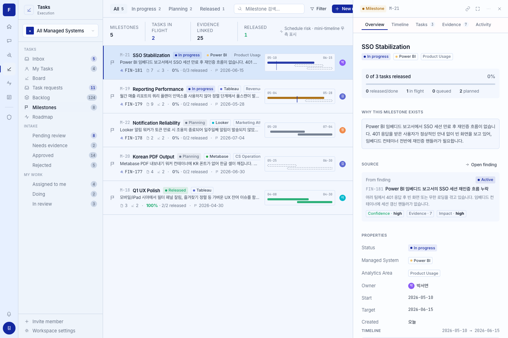
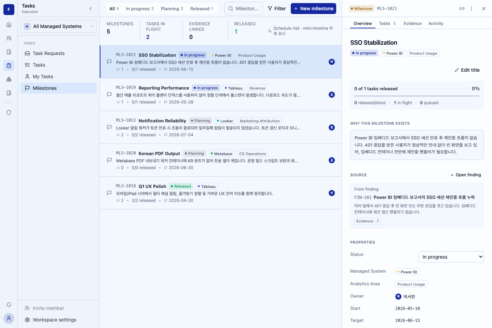
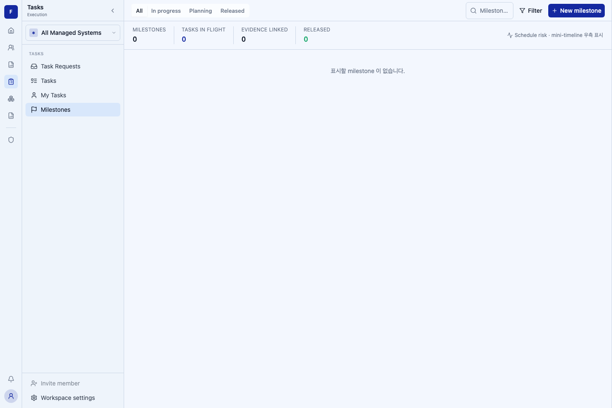

Post-fix source: 61f7f29a0ab2828f9195df46124ed27d1328f86f. Two intended regression screens only: empty list and populated list with detail. Desktop1440×960, Chromium, Asia/Seoul, fixed clock2026-07-21T09:00:00Z. Click images for full resolution.
Residual counts: HIGH=0, MEDIUM=0, LOW=2. No in-scope copy mismatch or critical-region MEDIUM remains. The two LOW rows disclose minor list rhythm and progress-percentage typography; no pixel-identity claim is made. Earlier shared badge/avatar style differences were repaired rather than treated as approved deviations. Intentional plan/ADR exclusions and fixed findings are excluded from residual counts.
Fidelity compares the prototype image/source with current captures. Regression snapshots compare production against its accepted baseline; they do not independently establish prototype fidelity. Fixture APIs are mocked and fail-closed; these captures do not prove backend integration.



| Region | Category | Prototype | Impl | Severity | Resolution |
|---|---|---|---|---|---|
| shell / navigation | chrome | Prototype static Tasks sidebar, icons and synthetic counts | Production ListShell and existing Tasks navigation; Milestones has no badge | intentional | Plan B2a/B2f: reuse production shell; do not invent navigation counters. |
| toolbar | spacing | 200px search; primary action clips behind the detail panel in reference | 112px search; four 13px tabs and complete New milestone action fit the 708px list column | intentional | Bounded usability correction to keep the shipped primary action reachable. Geometry and hit-test regression covers tabs and action. Explicit PR deviation. |
| toolbar counts / search | data-shape | All 5 / In progress 2 / Planning 2 / Released 1; search placeholder | Same counts from fixture; search placeholder truncates at the narrower width; accessible name and full placeholder retained | intentional | Plan B2c filtering plus bounded search-width correction above; no copy replacement. |
| summary | data-shape | 5 milestones, 2 in flight, 25 evidence, 1 released | 5 milestones, 2 in flight, 0 evidence, 1 released | intentional | Plan B2c explicitly requires summary evidence 0 because list DTO has no evidence count. |
| list rhythm | spacing | Compact summary boundary; 2px metadata dots and prototype excerpt line rhythm | List begins a few pixels lower; 4px separators and excerpt line-height1.5 | LOW | Minor list rhythm differences retained as an inline note. Copy, row hierarchy and real data are preserved; no functional change. |
| list identifiers / metadata | data-shape | M-21 etc.; source Finding chip, evidence count, prototype child counts | MLS-1021 etc.; no source/evidence chip; actual task counts and progress | intentional | Plan authorized MLS prefix; B2c omits source chip and evidence count unavailable in list DTO. Fixture data is contract-valid, not a claim about live records. |
| list mini-timeline | hierarchy | Mini timeline at right of every row | Omitted; why text can use the remaining row width | intentional | Plan B2-pixel explicit intentional deferral; Slice C / Gantt out of scope. |
| detail section navigation | hierarchy | Overview / Timeline / Tasks 3 / Evidence 7 / Activity | Overview / Tasks 1 / Evidence / Activity | intentional | Plan B2d/B2d-tasks: no Timeline; actual task count; no fabricated Evidence reader/count. |
| title actions / vertical position | interaction-affordance | Static title block in reference | Permission-gated Edit title button adds a row before progress | intentional | Plan B2e requires distinct title editing; status editing is a separate control under Properties (B2e-status). |
| detail kind header | token | Amber Milestone badge with dot and tinted background | Milestone-only badge, valid RGB token use; display id MLS-1021 | fixed | Header repair; other entity kinds unchanged. Browser computed-style regression and shared UI tests. |
| status badges / released summary | token | Compact colored badges with dot; green Released value | Matching compact colored badges/dot; semantic success summary | fixed | Feature-local RGB token correction; browser computed text/background/dot assertions. |
| detail progress | token | 4px visible gray track, prototype totals | 4px contrasting semantic gray track, real totals at 0% | fixed | Round2 P2-1; actual computed height and card/track contrast RED then GREEN. |
| detail Why / Source / sections | typography | Why 13px/1.6; summary12px/1.55; scroll28/24/32 and section32px | Same measured typography and spacing; source wraps according to real text/DTO | fixed | Round2 P3-1. Original density RED was a locator failure; only round2 real computed-style RED is credited. |
| detail source metadata | data-shape | From finding, Active, Confidence high, Evidence7, Impact high | From finding, source display id/title/summary and Evidence7 | intentional | Plan A9/B2d source_finding DTO omits status/confidence/impact; no synthetic values added. From finding matches the baseline verbatim. |
| Properties layout | spacing | 120px label column +12px gap, left-aligned13px values | Same grid and common value origin after fonts settle | fixed | Round2 P2-2; browser measured flex/right-aligned RED then grid/left-aligned GREEN. |
| Properties status / dates | interaction-affordance | Static status badge; Created 오늘 | Authorized status select; persisted YYYY-MM-DD created date | intentional | ADR-0050 and plan B2e-status require four free-transition statuses; fixture created_at is persisted data, not synthetic 오늘. |
| managed-system / area / evidence badges | token | 20px compact badge, 11px/500 text,4px radius,6px semantic identity dot | Matching milestone-local presentation, same ADR-0021 identity tokens and established label mapping | fixed | 883d897; actual computed-CSS RED then GREEN. Shared components remain unchanged. |
| owner avatar geometry | token | 18px circle with white9px initial | 18px circle with white9px actual-name initial | fixed | 883d897; computed dimensions/colors verified in detail and list. Unknown actor remains —. |
| owner name typography | typography | Inherited13px body type with1.4 line height | 13px name and18.2px computed line height | fixed | 61f7f29; computed-style RED at12px then GREEN; Tasks116 and both FE gates pass. |
| owner avatar color | data-shape | Synthetic per-person colors in prototype user fixtures | One documented semantic fallback --color-aether-blue; real names and initials | intentional | AvatarUser exposes display_name only. No per-person color data exists; no invented person-to-color mapping or DTO extension. This records a data limitation, not a claim of user-approved visual redesign. |
| detail section/source typography | typography | Section11px,10px bottom; source title/progress headline13px; source gap6px,id margin6px; Open finding24px/12px and11px arrow | Matching measured values after local correction | fixed | 883d897; new fidelity spec measured51 expected CSS failures before edits and2 passing tests after. Source title wrapping is now attributed to real text/DTO rather than stale larger type. |
| list title and metadata | typography | Title13px/600,8px badge gaps; metadata icons10px/gap10px | Same measured local title, badge-gap and icon sizes; truncation preserved | fixed | 883d897; existing real counts, MLS prefix and plan omissions retained. |
| detail progress percentage | typography | 15px percentage with progress-dependent tone | 14px percentage in secondary text; correct real percentage | LOW | Minor type/tone difference retained as an inline note; progress track and totals are corrected and verified. |
| detail header secondary actions | chrome | Link / expand / more / close | Link / more / close; existing production detail shell | intentional | Existing production panel pattern (plan B2d); no new fullscreen behavior introduced. |
| Timeline section | hierarchy | Timeline content below Properties | Omitted | intentional | Plan B2-pixel explicit deferral to Slice C / Gantt. |
| Outcome survey block | hierarchy | Outcome survey callout in prototype | Omitted | intentional | Plan explicit exclusion; automatic Milestone→Outcome Survey not implemented. |
| Link source finding | interaction-affordance | Prototype writer action when unlinked | Omitted; planned standalone message | intentional | Plan B2d and B2-pixel stopped writer; no Finding-side writer introduced. |
| Add task | interaction-affordance | Prototype Add task action | Omitted; read-only child rows | intentional | Plan B2d-tasks / B2-pixel explicit stopped writer. |
| Tasks estimate slot | data-shape | Prototype estimate | Task due date | intentional | ADR-0050 accepted G-columns decision; no invented estimate field. |
| empty screen | data-shape | Reference baseline is populated; source defines empty state | Separate empty-list capture with specified empty copy and create action | intentional | Plan B2a/B2c/B2-pixel requires empty and populated captures; no empty PNG prototype exists. |
Evidence: .review/fix-514-pixel-final-fidelity-result.md; .review/fix-514-pixel-race-result.md; .review/fix-514-pixel-round2-result.md; .review/fix-514-pixel-header-result.md; .review/midreview-514-B2-pixel.md; final verification ledger. Screenshot refresh uses --update-snapshots=all and targets only the two named tests; full visual suite runs without snapshot updates. The baseline artifact commit contains exactly two intended PNG additions and this report.
{kind=link}
{kind=link}
{kind=link}